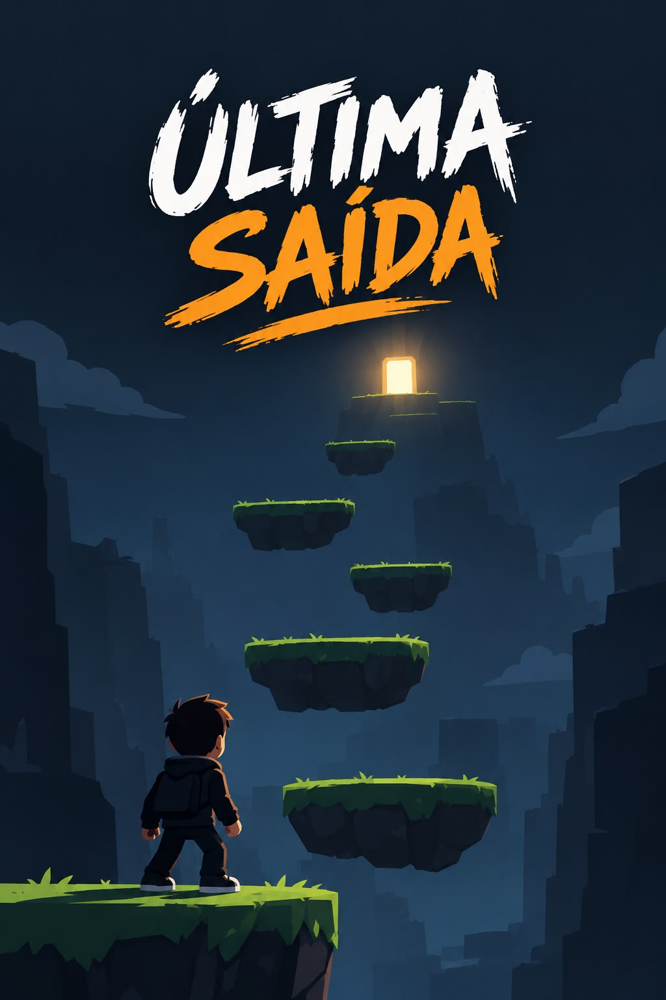
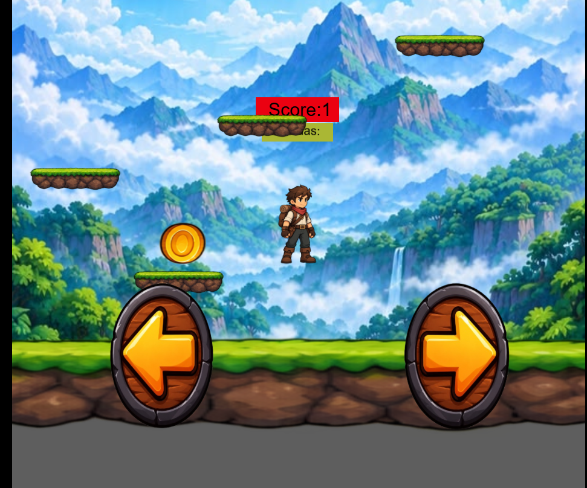
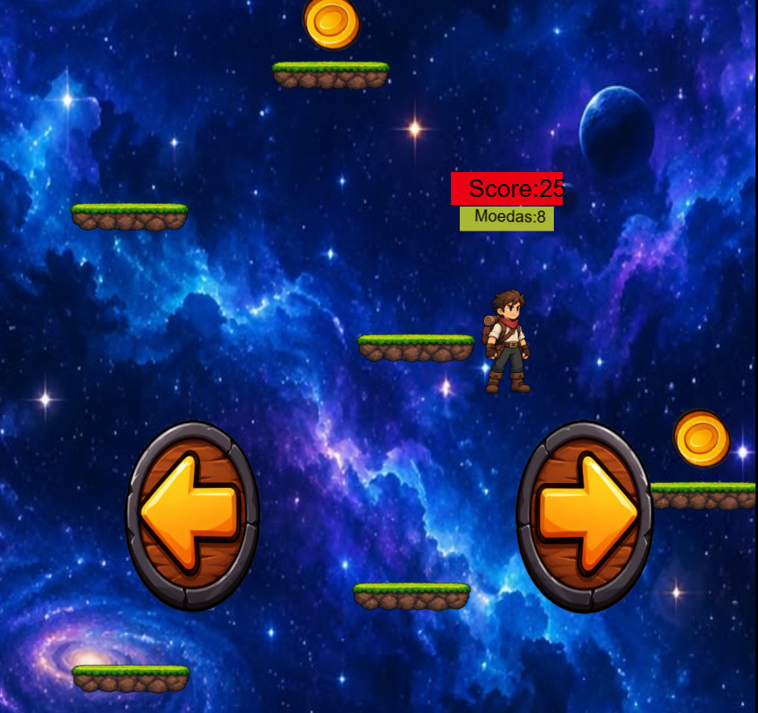
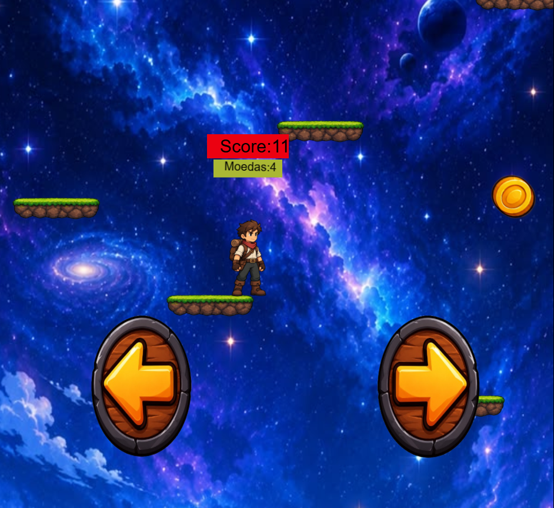

Subir
Controle o personagem, pulando para continuar avençando para cima.

Última Saída é um projeto de jogo desenvolvido como atividade acadêmica, com foco em criar uma experiência simples, envolvente e fácil de entender. A proposta mistura exploração, suspense e pequenos desafios para fazer o jogador prestar atenção no ambiente e pensar antes de agir.
A história começa quando o personagem acorda em um lugar desconhecido e percebe que o caminho ao redor está bloqueado. A única direção possível é para cima. À frente, surgem plataformas espalhadas, formando um caminho que parece não ter fim. Ele começa a subir, pulando de uma plataforma para outra, e logo percebe que o desafio aumenta e um único erro pode fazê-lo cair. Mesmo sem saber o que existe no topo, ele continua subindo. Quanto mais alto chega, maior sua pontuação. O objetivo é simples: subir o máximo que conseguir e descobrir até onde esse caminho pode levá-lo. A aventura continua enquanto ele conseguir permanecer nas plataformas. Quando ele cai, a tentativa termina, mas sempre há a possibilidade de recomeçar e tentar ir ainda mais alto.
GAME
Controle o personagem, pulando para continuar avençando para cima.
Quanto mais alto você chegar, maior será sua pontuação.
Evite cair e continue subindo para sobreviver o máximo possível.
VISUAL



EXPERIÊNCIA DO USUÁRIO
Nome: Peter, 20 anos
Perfil: Gosta de jogos simples e desafiadores, procura partidas rápidas para se
divertir e tentar superar seus próprios recordes.
Uma experiência simples de entender, com comandos fáceis e um objetivo claro, subir o máximo possível.
Frustração com jogos muito complicados, controles difíceis ou falta de clareza sobre o que fazer.
Criar controles simples, deixar o objetivo evidente, mostrar a pontuação durante a partida e manter uma interface limpa para que o jogador entenda tudo rapidamente.